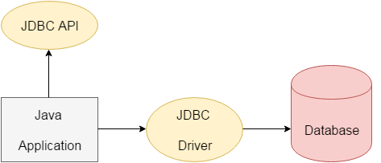

<!DOCTYPE html>
<html lang="en">

</html>
<html>

<head>
    <meta charset="UTF-8">
    <meta http-equiv="X-UA-Compatible" content="IE=edge">
    <title>JDBC -Interview of Geeks</title>

    <!-- Css -->
    <link rel="favicon icon" href="favicon.png">
    <link rel="stylesheet" href="../style/style.css">
    <link href="https://cdn.jsdelivr.net/npm/bootstrap@5.0.0-beta2/dist/css/bootstrap.min.css" rel="stylesheet"
        integrity="sha384-BmbxuPwQa2lc/FVzBcNJ7UAyJxM6wuqIj61tLrc4wSX0szH/Ev+nYRRuWlolflfl" crossorigin="anonymous">

    <!-- Scripts -->
    <script src="https://code.jquery.com/jquery-3.2.1.slim.min.js"></script>
    <script src="https://cdn.jsdelivr.net/npm/bootstrap@5.0.0-beta2/dist/js/bootstrap.bundle.min.js"
        integrity="sha384-b5kHyXgcpbZJO/tY9Ul7kGkf1S0CWuKcCD38l8YkeH8z8QjE0GmW1gYU5S9FOnJ0"
        crossorigin="anonymous"></script>

    <!-- Meta Tags -->
    <meta name="keywords"
        content="interviewofgeeks, interview of geeks, interview preperation, interview questions, interview, java, core java, jdbc, jdbc api, java jdbc,  serialization, deserialization, networking, socket, client, server, reflection, internationization, java bean, rmi, remote method invocation, core java data structure, collection, java collections">
    <meta name="author" content="Ajay Kumar">
    <meta name="description"
        content="A list of top frequently asked JDBC interview questions and answers is given below.">
    <meta name="viewport" content="width=device-width, initial-scale=1.0">

    <!-- Global site tag (gtag.js) - Google Analytics -->
    <script data-ad-client="ca-pub-4645356742269640" async
        src="https://pagead2.googlesyndication.com/pagead/js/adsbygoogle.js"></script>
    <script async src="https://www.googletagmanager.com/gtag/js?id=G-ZX3ZK4E5HC"></script>
    <script>
        window.dataLayer = window.dataLayer || [];
        function gtag() { dataLayer.push(arguments); }
        gtag('js', new Date());

        gtag('config', 'G-ZX3ZK4E5HC');
    </script>

    <style>
        body {
            font-family: 'Open Sans', sans-serif;
            background-color: rgb(250, 250, 250);
            overflow-x: hidden;
        }
    </style>


</head>
<!-- Header -->

<body>

    <div class="">
        <nav class="navbar bg-white" id="siteloog">
            <a href="../index.html"><span class="navbar-brand mb-0 h1"></span></a>
        </nav>
        <!-- Header Menu -->
        <nav class="navbar navbar-expand-lg navbar-light bg-white">
            <button class="navbar-toggler" type="button" data-toggle="collapse" data-target="#navbarNav"
                aria-controls="navbarNav" aria-expanded="false" aria-label="Toggle navigation">
                <span class="navbar-toggler-icon"></span>
            </button>
            <div class="collapse navbar-collapse" id="navbarNav">
                <ul class="navbar-nav">
                    <li class="nav-item ">
                        <a class="nav-link" href="../index.html">Home</a>
                    </li>
                    <li class="nav-item">
                        <a class="nav-link" href="data-structure.html">Data Structure</a>
                    </li>
                    <li class="nav-item">
                        <a class="nav-link" href="algorithm.html">Algorithm</a>
                    </li>
                    <li class="nav-item">
                        <a class="nav-link" href="company-interview.html">Company Interview</a>
                    </li>
                    <li class="nav-item">
                        <a class="nav-link" href="technical-interview.html">Technical Interview</a>
                    </li>
                    <li class="nav-item">
                        <a class="nav-link" href="web-interview.html">Web Interview</a>
                    </li>
                    <li class="nav-item">
                        <a class="nav-link active" href="java-interview.html">Java Interview</a>
                    </li>
                    <li class="nav-item">
                        <a class="nav-link" href="database-interview.html">Data Base Interview</a>
                    </li>
                    <li class="nav-item">
                        <a class="nav-link" href="python-interview.html">Python Interview</a>
                    </li>
                </ul>
            </div>
        </nav>

        <!-- Main div -->
        <div class="container  ">
            <div class="row" style="margin-top: 25px;">
                <div class="col-md-8 bg-white shadow-sm">
                    <span>
                        <h4 class="hm-welcome">JDBC Interview Questions</h4>
                    </span><span>30 Questions</span>

                    <hr class="divider">
                    <p class="read-para">A list of top frequently asked JDBC interview questions and answers is given
                        below.</p>
                    <br>


                    <div>
                        <ol class="qa-list" id="javabasicquestions">
                            <li>
                                <h5 class="question">1. What is JDBC?</h5>
                                <p class="read-para">JDBC is a Java API that is used to connect and execute the query to
                                    the database. JDBC API uses JDBC drivers to connect to the database. JDBC API can be
                                    used to access tabular data stored into any relational database.</p>
                                

                                <hr>
                            </li>

                            <li>
                                <h5 class="question">2. What is JDBC Driver?
                                </h5>
                                <p class="read-para">JDBC Driver is a software component that enables Java application
                                    to interact with the database. There are 4 types of JDBC drivers:</p>
                                <ul class="read-para">
                                    <li class="read-para"><span>JDBC-ODBC bridge driver:</span>The JDBC-ODBC bridge
                                        driver uses the ODBC driver to connect to the database. The JDBC-ODBC bridge
                                        driver converts JDBC method calls into the ODBC function calls. This is now
                                        discouraged because of the thin driver. It is easy to use and can be easily
                                        connected to any database.</li>
                                    <li class="read-para"><span>Native-API driver (partially java driver): </span>The
                                        Native API driver uses the client-side libraries of the database. The driver
                                        converts JDBC method calls into native calls of the database API. It is not
                                        written entirely in Java. Its performance is better than JDBC-ODBC bridge
                                        driver. However, the native driver must be installed on each client machine.
                                    </li>
                                    <li class="read-para"><span>Network Protocol driver (fully java driver): </span>The
                                        Network Protocol driver uses middleware (application server) that converts JDBC
                                        calls directly or indirectly into the vendor-specific database protocol. It is
                                        entirely written in Java. There is no requirement of the client-side library
                                        because of the application server that can perform many tasks like auditing,
                                        load balancing, logging, etc.</li>
                                    <li class="read-para"><span>Thin driver (fully java driver): </span>The thin driver
                                        converts JDBC calls directly into the vendor-specific database protocol. That is
                                        why it is known as the thin driver. It is entirely written in Java language. Its
                                        performance is better than all other drivers however these drivers depend upon
                                        the database.</li>
                                </ul>
                                <hr>
                            </li>

                            <li>
                                <h5 class="question">3. What are the steps to connect to the database in java?</h5>
                                <p class="read-para">The following steps are used in database connectivity.</p>

                                <ol>
                                    <li class="read-para"><span>Registering the driver class: </span> <br><br> The
                                        forName()
                                        method of the Class class is used to register the driver class. This method is
                                        used to load the driver class dynamically. Consider the following example to
                                        register OracleDriver class. <br>
                                        <code>
                                            Class.forName("oracle.jdbc.driver.OracleDriver");  
                                        </code> <br> <br>
                                    </li>

                                    <li class="read-para"><span>Creating connection:</span><br><br> The getConnection()
                                        method of DriverManager class is used to establish the connection with the
                                        database. The syntax of the getConnection() method is given below.<br>
                                        <code>
                                            1) public static Connection getConnection(String url)throws SQLException   <br>
2) public static Connection getConnection(String url,String name,String password)  <br>
throws SQLException  
                                        </code> <br><br> Consider the following example to establish the connection
                                        with the Oracle database. <br>
                                        <code>
                                            Connection con=DriverManager.getConnection(  <br> 
"jdbc:oracle:thin:@localhost:1521:xe","system","password");  
                                        </code> <br><br>
                                    </li>

                                    <li class="read-para"><span>Creating the statement:</span><br><br>The
                                        createStatement() method of Connection interface is used to create the
                                        Statement. The object of the Statement is responsible for executing queries with
                                        the database.<br>
                                        <code>
                                            public Statement createStatement()throws SQLException 
                                        </code> <br> consider the following example to create the statement object <br>

                                        <code>
                                            Statement stmt=con.createStatement();  
                                        </code> <br><br>
                                    </li>

                                    <li class="read-para"><span>Executing the queries:</span><br><br> The executeQuery()
                                        method of Statement interface is used to execute queries to the database. This
                                        method returns the object of ResultSet that can be used to get all the records
                                        of a table. <br><br>

                                        Syntax of executeQuery() method is given below.<br>
                                        <code>
                                            public ResultSet executeQuery(String sql)throws SQLException  
                                        </code>
                                        <br>Example to execute the query <br>
                                        <code>ResultSet rs=stmt.executeQuery("select * from emp");   <br>
                                            while(rs.next()){   <br>
                                            System.out.println(rs.getInt(1)+" "+rs.getString(2));  
                                            } </code> <br>
                                        However, to perform the insert and update operations in the database,
                                        executeUpdate() method is used which returns the boolean value to indicate the
                                        successful completion of the operation. <br><br>
                                    </li>
                                    <li class="read-para"><span>Closing connection:</span><br><br>By closing connection,
                                        object statement and ResultSet will be closed automatically. The close() method
                                        of Connection interface is used to close the connection. <br><br>

                                        Syntax of close() method is given below. <br>
                                        <code>public void close()throws SQLException  </code> <br>
                                        Consider the following example to close the connection. <br>
                                        <code>con.close();  </code>
                                    </li>


                                </ol>
                                <hr>
                            </li>

                            <li>
                                <h5 class="question">4. What are the JDBC API components?</h5>
                                <p class="read-para">The java.sql package contains following interfaces and classes for
                                    JDBC API. <br><br><span>Interfaces:</span></p>
                                <ul>
                                    <li class="read-para"><span>Connection:</span> The Connection object is created by
                                        using getConnection() method of DriverManager class. DriverManager is the
                                        factory for connection.</li>
                                    <li class="read-para"><span>Statement: </span>The Statement object is created by
                                        using createStatement() method of Connection class. The Connection interface is
                                        the factory for Statement.</li>
                                    <li class="read-para"><span>PreparedStatement: </span>The PrepareStatement object is
                                        created by using prepareStatement() method of Connection class. It is used to
                                        execute the parameterized query.</li>
                                    <li class="read-para"><span>ResultSet: </span>The object of ResultSet maintains a
                                        cursor pointing to a row of a table. Initially, cursor points before the first
                                        row. The executeQuery() method of Statement interface returns the ResultSet
                                        object.</li>
                                    <li class="read-para"><span>ResultSetMetaData: </span>he object of ResultSetMetaData
                                        interface cotains the information about the data (table) such as numer of
                                        columns, column name, column type, etc. The getMetaData() method of ResultSet
                                        returns the object of ResultSetMetaData.</li>
                                    <li class="read-para"><span>DatabaseMetaData: </span>DatabaseMetaData interface
                                        provides methods to get metadata of a database such as the database product
                                        name, database product version, driver name, name of the total number of tables,
                                        the name of the total number of views, etc. The getMetaData() method of
                                        Connection interface returns the object of DatabaseMetaData.</li>
                                    <li class="read-para"><span>CallableStatement: </span>CallableStatement interface is
                                        used to call the stored procedures and functions. We can have business logic on
                                        the database through the use of stored procedures and functions that will make
                                        the performance better because these are precompiled. The prepareCall() method
                                        of Connection interface returns the instance of CallableStatement.</li>
                                </ul>
                                <p class="read-para"><span>Classes:</span></p>
                                <ul>
                                    <li class="read-para"><span>DriverManager: </span>The DriverManager class acts as an
                                        interface between the user and drivers. It keeps track of the drivers that are
                                        available and handles establishing a connection between a database and the
                                        appropriate driver. It contains several methods to keep the interaction between
                                        the user and drivers.</li>
                                    <li class="read-para"><span>Blob: </span>Blob stands for the binary large object. It
                                        represents a collection of binary data stored as a single entity in the database
                                        management system.</li>
                                    <li class="read-para"><span>Clob: </span>Clob stands for Character large object. It
                                        is a data type that is used by various database management systems to store
                                        character files. It is similar to Blob except for the difference that BLOB
                                        represent binary data such as images, audio and video files, etc. whereas Clob
                                        represents character stream data such as character files, etc.
                                    </li>
                                    <li class="read-para"><span>SQLException: </span>It is an Exception class which
                                        provides information on database access errors.</li>
                                </ul>
                                <hr>
                            </li>

                            <li>
                                <h5 class="question">5. What are the JDBC statements?</h5>
                                <p class="read-para">In JDBC, Statements are used to send SQL commands to the database
                                    and receive data from the database. There are various methods provided by JDBC
                                    statements such as execute(), executeUpdate(), executeQuery, etc. which helps you to
                                    interact with the database. <br><br>

                                    There is three type of JDBC statements given in the following table.</p>
                                <table class="table">
                                    <thead class="thead-dark read-para">
                                        <tr>
                                            <th scope="col" style="width: 25%;">Statements</th>
                                            <th scope="col" style="width: 75%;">Explanation</th>
                                        </tr>
                                    </thead>
                                    <tbody class="read-para">
                                        <tr>
                                            <td>1) Statement</td>
                                            <td>Statement is the factory for resultset. It is used for general purpose
                                                access to the database. It executes a static SQL query at runtime.</td>
                                        </tr>
                                        <tr>
                                            <td>2) PreparedStatement</td>
                                            <td>The PreparedStatement is used when we need to provide input parameters
                                                to the query at runtime.</td>
                                        </tr>
                                        <tr>
                                            <td>3) CallableStatement</td>
                                            <td>CallableStatement is used when we need to access the database stored
                                                procedures. It can also accept runtime parameters.</td>
                                        </tr>
                                    </tbody>
                                </table>
                                <hr>
                            </li>

                            <li>
                                <h5 class="question">6. What is the return type of Class.forName() method?</h5>
                                <p class="read-para">The Class.forName() method returns the object of java.lang.Class
                                    object.</p>
                                <hr>
                            </li>


                            <li>
                                <h5 class="question">7. What are the differences between Statement and PreparedStatement
                                    interface?</h5>
                                <table class="table">
                                    <thead class="thead-dark read-para">
                                        <tr>
                                            <th scope="col" style="width: 50%;">Statement</th>
                                            <th scope="col" style="width: 50%;">PreparedStatement</th>
                                        </tr>
                                    </thead>
                                    <tbody class="read-para">
                                        <tr>
                                            <td>The Statement interface provides methods to execute queries with the
                                                database. The statement interface is a factory of ResultSet; i.e., it
                                                provides the factory method to get the object of ResultSet.</td>
                                            <td>The PreparedStatement interface is a subinterface of Statement. It is
                                                used to execute the parameterized query.</td>
                                        </tr>
                                        <tr>
                                            <td>In the case of Statement, the query is compiled each time we run the
                                                program.</td>
                                            <td>In the case of PreparedStatement, the query is compiled only once.</td>
                                        </tr>
                                        <tr>
                                            <td>The Statement is mainly used in the case when we need to run the static
                                                query at runtime.</td>
                                            <td>PreparedStatement is used when we need to provide input parameters to
                                                the query at runtime.</td>
                                        </tr>
                                    </tbody>
                                </table>
                                <hr>
                            </li>

                            <li>
                                <h5 class="question">8. How can we set null value in JDBC PreparedStatement?</h5>
                                <p class="read-para">By using setNull() method of PreparedStatement interface, we can
                                    set the null value to an index. The syntax of the method is given below.</p>
                                <code>void setNull(int parameterIndex, int sqlType) throws SQLException  </code>
                                <hr>
                            </li>

                            <li>
                                <h5 class="question">9. What are the benefits of PreparedStatement over Statement??</h5>
                                <p class="read-para">The benefits of using PreparedStatement over Statement interface is
                                    given below.</p>
                                <ul class="read-para">
                                    <li>The PreparedStatement performs faster as compare to Statement because the
                                        Statement needs to be compiled everytime we run the code whereas the
                                        PreparedStatement compiled once and then execute only on runtime.</li>
                                    <li>PreparedStatement can execute Parameterized query whereas Statement can only run
                                        static queries.</li>
                                    <li>The query used in PreparedStatement is appeared to be similar every time.
                                        Therefore, the database can reuse the previous access plan whereas, Statement
                                        inline the parameters into the String, therefore, the query doesn't appear to be
                                        same everytime which prevents cache reusage.</li>
                                </ul>
                                <hr>
                            </li>

                            <li>
                                <h5 class="question">10. What are the differences between execute, executeQuery, and
                                    executeUpdate?</h5>
                                <table class="table">
                                    <thead class="thead-dark read-para">
                                        <tr>
                                            <th scope="col" style="width: 33%;">execute</th>
                                            <th scope="col" style="width: 33%;">executeQuery</th>
                                            <th scope="col" style="width: 34%;">executeUpdate</th>
                                        </tr>
                                    </thead>
                                    <tbody class="read-para">
                                        <tr>
                                            <td>The execute method can be used for any SQL statements(Select and Update
                                                both).</td>
                                            <td>The executeQuery method can be used only with the select statement.</td>
                                            <td>The executeUpdate method can be used to update/delete/insert operations
                                                in the database.</td>
                                        </tr>
                                        <tr>
                                            <td>The execute method returns a boolean type value where true indicates
                                                that the ResultSet s returned which can later be extracted and false
                                                indicates that the integer or void value is returned.</td>
                                            <td>The executeQuery() method returns a ResultSet object which contains the
                                                data retrieved by the select statement.</td>
                                            <td>The executeUpdate() method returns an integer value representing the
                                                number of records affected where 0 indicates that query returns nothing.
                                            </td>
                                        </tr>
                                    </tbody>
                                </table>
                                <hr>
                            </li>

                            <li>
                                <h5 class="question">11. What are the different types of ResultSet?</h5>
                                <p class="read-para">ResultSet is categorized by the direction of the reading head and
                                    sensitivity or insensitivity of the result provided by it. There are three general
                                    types of ResultSet.</p>
                                <table class="table">
                                    <thead class="thead-dark read-para">
                                        <tr>
                                            <th scope="col" style="width: 30%;">Type</th>
                                            <th scope="col" style="width: 70%;">Description</th>
                                        </tr>
                                    </thead>
                                    <tbody class="read-para">
                                        <tr>
                                            <td>ResultSet.TYPE_Forward_ONLY</td>
                                            <td>The cursor can move in the forward direction only.</td>
                                        </tr>
                                        <tr>
                                            <td>ResultSet.TYPE_SCROLL_INSENSITIVE</td>
                                            <td>The cursor can move in both the direction (forward and backward). The
                                                ResultSet is not sensitive to the changes made by the others to the
                                                database.</td>
                                        </tr>
                                        <tr>
                                            <td>ResultSet.TYPE_SCROLL_SENSITIVE</td>
                                            <td>The cursor can move in both the direction. The ResultSet is sensitive
                                                to the changes made by the others to the database.</td>
                                        </tr>
                                    </tbody>
                                </table>
                                <hr>
                            </li>

                            <li>
                                <h5 class="question">12. What are the differences between ResultSet and RowSet?</h5>
                                <table class="table">
                                    <thead class="thead-dark read-para">
                                        <tr>
                                            <th scope="col" style="width: 50%;">ResultSet</th>
                                            <th scope="col" style="width: 50%;">RowSet</th>
                                        </tr>
                                    </thead>
                                    <tbody class="read-para">
                                        <tr>
                                            <td>ResultSet cannot be serialized as it maintains the connection with the
                                                database.</td>
                                            <td>RowSet is disconnected from the database and can be serialized.</td>
                                        </tr>
                                        <tr>
                                            <td>ResultSet object is not a JavaBean object</td>
                                            <td>ResultSet Object is a JavaBean object.</td>
                                        </tr>
                                        <tr>
                                            <td>ResultSet is returned by the executeQuery() method of Statement
                                                Interface.</td>
                                            <td>Rowset Interface extends ResultSet Interface and returned by calling the
                                                RowSetProvider.newFactory().createJdbcRowSet() method..</td>
                                        </tr>
                                        <tr>
                                            <td>ResultSet object is non-scrollable and non-updatable by default.</td>
                                            <td>RowSet object is scrollable and updatable by default.</td>
                                        </tr>
                                    </tbody>
                                </table>
                                <hr>
                            </li>

                            <li>
                                <h5 class="question">13. How can we execute stored procedures using CallableStatement?
                                </h5>
                                <p class="read-para">Following are the steps to create and execute stored procedures.
                                    Here, we are creating a table user420 by using a stored procedure and inserting
                                    values into it.</p>
                                <ul>
                                    <li class="read-para"><span>Create the procedure in the database.</span> <br>
                                        To call the stored procedure, you need to create it in the database. Here, we
                                        are assuming that the stored procedure looks like this. <br>
                                        <code>
                                        create or replace procedure "INSERTR"   <br>
(id IN NUMBER,   <br>
name IN VARCHAR2)   <br>
is   <br>
begin   <br>
insert into user420 values(id,name);   <br>
end;   <br>
/   
                                    </code>
                                        <br>The table structure is given below: <br>
                                        <code>
                                        create table user420(id number(10), name varchar2(200));  
                                    </code>
                                    </li>
                                    <li class="read-para"><span>Establish a network connection.</span><br>
                                        <code>
                                        Class.forName("oracle.jdbc.driver.OracleDriver");   <br>
Connection con=DriverManager.getConnection(   <br>
"jdbc:oracle:thin:@localhost:1521:xe","system","oracle");  
                                    </code>
                                    </li>
                                    <li class="read-para">
                                        <span>Create the Object of CallableStatement.</span><br>
                                        <code>
                                        CallableStatement stmt=con.prepareCall("{call insertR(?,?)}");  
                                    </code>
                                    </li>
                                    <li class="read-para">
                                        <span>Provide the values and execute the query by using the following
                                            syntax.</span> <br>
                                        <code>
                                        stmt.setInt(1,1011);  <br> 
stmt.setString(2,"Amit");   <br>
stmt.execute(); 
                                    </code>
                                    </li>
                                    <li class="read-para">
                                        <span>Check the database; the values will be found there. However, the complete
                                            code will look like the following.</span> <br>
                                        <code>
                                                import java.sql.*;   <br>
public class Proc {   <br>
public static void main(String[] args) throws Exception{   <br>
   <br>
Class.forName("oracle.jdbc.driver.OracleDriver");   <br>
Connection con=DriverManager.getConnection(   <br>
"jdbc:oracle:thin:@localhost:1521:xe","system","oracle");   <br>
   <br>
CallableStatement stmt=con.prepareCall("{call insertR(?,?)}");   <br>
stmt.setInt(1,1011);   <br>
stmt.setString(2,"Amit");   <br>
stmt.execute();   <br>
   <br>
System.out.println("success");   <br>
}   <br>
}  
                                            </code>
                                    </li>
                                </ul>
                                <hr>
                            </li>

                            <li>
                                <h5 class="question">14. What is the role of the JDBC DriverManager class?</h5>
                                <p class="read-para">The DriverManager class acts as an interface between user and
                                    drivers. It keeps track of the drivers that are available and handles establishing a
                                    connection between a database and the appropriate driver. The DriverManager class
                                    maintains a list of Driver classes that have registered themselves by calling the
                                    method DriverManager.registerDriver().</p>

                                <hr>
                            </li>

                            <li>
                                <h5 class="question">15. What are the functions of the JDBC Connection interface?</h5>
                                <p class="read-para">The Connection interface maintains a session with the database. It
                                    can be used for transaction management. It provides factory methods that return the
                                    instance of Statement, PreparedStatement, CallableStatement, and DatabaseMetaData.
                                </p>
                                <hr>
                            </li>

                            <li>
                                <h5 class="question">16. What does the JDBC ResultSet interface?</h5>
                                <p class="read-para">The ResultSet object represents a row of a table. It can be used to
                                    change the cursor pointer and get the information from the database. By default,
                                    ResultSet object can move in the forward direction only and is not updatable.
                                    However, we can make this object to move the forward and backward direction by
                                    passing either TYPE_SCROLL_INSENSITIVE or TYPE_SCROLL_SENSITIVE in
                                    createStatement(int, int) method.
                                </p>
                                <hr>
                            </li>

                            <li>
                                <h5 class="question">17. What does the JDBC ResultSetMetaData interface?</h5>
                                <p class="read-para">The ResultSetMetaData interface returns the information of table
                                    such as the total number of columns, column name, column type, etc.
                                </p>
                                <hr>
                            </li>

                            <li>
                                <h5 class="question">18. What does the JDBC DatabaseMetaData interface?</h5>
                                <p class="read-para">The DatabaseMetaData interface returns the information of the
                                    database such as username, driver name, driver version, number of tables, number of
                                    views, etc. Consider the following example.</p>
                                <code>
                                        import java.sql.*;   <br>
class Dbmd{   <br>
public static void main(String args[]){   <br>
try{   <br>
Class.forName("oracle.jdbc.driver.OracleDriver");   <br>
   <br>
Connection con=DriverManager.getConnection(   <br>
"jdbc:oracle:thin:@localhost:1521:xe","system","oracle");   <br>
DatabaseMetaData dbmd=con.getMetaData();   <br>
   <br>
System.out.println("Driver Name: "+dbmd.getDriverName());   <br>
System.out.println("Driver Version: "+dbmd.getDriverVersion());  <br> 
System.out.println("UserName: "+dbmd.getUserName());   <br>
System.out.println("Database Product Name: "+dbmd.getDatabaseProductName());   <br>
System.out.println("Database Product Version: "+dbmd.getDatabaseProductVersion());  <br> 
   <br>
con.close();   <br>
}catch(Exception e){ System.out.println(e);}   <br>
}   <br>
}  
                                    </code>
                                <p class="read-para" style="font-style:italic;">Output</p>
                                <code>
                                    Driver Name: Oracle JDBC Driver  <br>
Driver Version: 10.2.0.1.0XE <br>
Database Product Name: Oracle <br>
Database Product Version: Oracle Database 10g Express Edition Release 10.2.0.1.0 -Production
                                </code>
                                <hr>
                            </li>

                            <li>
                                <h5 class="question">19. Which interface is responsible for transaction management in
                                    JDBC?</h5>
                                <p class="read-para">The Connection interface provides methods for transaction
                                    management such as
                                    commit(), rollback() etc.</p>
                                <hr>
                            </li>

                            <li>
                                <h5 class="question">20. What is batch processing and how to perform batch processing in
                                    JDBC?</h5>
                                <p class="read-para">By using the batch processing technique in JDBC, we can execute
                                    multiple queries. It makes the performance fast. The java.sql.Statement and
                                    java.sql.PreparedStatement interfaces provide methods for batch processing. The
                                    batch processing in JDBC requires the following steps.</p>
                                <ul class="read-para">
                                    <li>Load the driver class</li>
                                    <li>Create Connection</li>
                                    <li>Create Statement</li>
                                    <li>Add query in the batch</li>
                                    <li>Execute the Batch</li>
                                    <li>Close Connection</li>
                                </ul>
                                <p class="read-para">Consider the following example to perform batch processing using
                                    the Statement interface.</p>
                                <code>
                                        import java.sql.*;   <br>
class FetchRecords{   <br>
public static void main(String args[])throws Exception{   <br>
Class.forName("oracle.jdbc.driver.OracleDriver");   <br>
Connection con=DriverManager.getConnection("jdbc:oracle:thin:@localhost:1521:xe","system","oracle");   <br>
con.setAutoCommit(false);   <br>
   <br>
Statement stmt=con.createStatement();   <br>
stmt.addBatch("insert into user420 values(190,'abhi',40000)");   <br>
stmt.addBatch("insert into user420 values(191,'umesh',50000)");   <br>
   <br>
stmt.executeBatch();//executing the batch   <br>
   <br>
con.commit();   <br>
con.close();   <br>
}}  
                                    </code>
                                <hr>
                            </li>

                            <li>
                                <h5 class="question">21. What are CLOB and BLOB data types in JDBC?</h5>
                                <p class="read-para">
                                    <span>TBLOB: </span>Blob can be defined as the variable-length, binary large
                                    object which is used to hold the group of Binary data such as voice, images, and
                                    mixed media. It can hold up to 2GB data on MySQL database and 128 GB on Oracle
                                    database. BLOB is supported by many databases such as MySQL, Oracle, and DB2 to
                                    store the binary data (images, video, audio, and mixed media). <br><br>

                                    <span>CLOB:</span> Clob can be defined as the variable-length, character-large
                                    object which is
                                    used to hold the character-based data such as files in many databases. It can hold
                                    up to 2 GB on MySQL database, and 128 GB on Oracle Database. A CLOB is considered as
                                    a character string.
                                </p>

                                <hr>
                            </li>

                            <li>
                                <h5 class="question">22. What are the different types of lockings in JDBC?</h5>
                                <p class="read-para">A lock is a certain type of software mechanism by using which, we
                                    can restrict other users from using the data resource. There are four type of locks
                                    given in JDBC that are described below.</p>
                                <ul class="read-para">
                                    <li class="read-para"><Span>Row and Key Locks: </Span>These type of locks are used
                                        when we update the rows.</li>
                                    <li class="read-para"><span>Page Locks:</span> These type of locks are applied to a
                                        page. They are used in the
                                        case, where a transaction remains in the process and is being updated, deleting,
                                        or inserting some data in a row of the table. The database server locks the
                                        entire page that contains the row. The page lock can be applied once by the
                                        database server.</li>
                                    <li class="read-para"><span>Table locks:</span> Table locks are applied to the
                                        table. It can be applied in two.
                                        ways, i.e., shared and exclusive. Shared lock lets the other transactions to
                                        read the table but not update it. However, The exclusive lock prevents others
                                        from reading and writing the table.</li>
                                    <li class="read-para"><span>Database locks:</span> The Database lock is used to
                                        prevent the read and update access
                                        from other transactions when the database is open.</li>
                                </ul>
                                <hr>
                            </li>

                            <li>
                                <h5 class="question">23. How can we store and retrieve images from the database?</h5>
                                <p class="read-para">By using the PreparedStatement interface, we can store and retrieve
                                    images. Create a table which contains two columns namely NAME and PHOTO.</p>
                                <code>
                                        CREATE TABLE  "IMGTABLE"    <br>
   (    "NAME" VARCHAR2(4000),    <br>
    "PHOTO" BLOB   <br>
   )  
                                    </code>
                                <p class="read-para">Consider the following example to store the image in the database.
                                </p>
                                <code>
                                    import java.sql.*;   <br>
import java.io.*;   <br>
public class InsertImage {   <br>
public static void main(String[] args) {   <br>
try{   <br>
Class.forName("oracle.jdbc.driver.OracleDriver");   <br>
Connection con=DriverManager.getConnection(   <br>
"jdbc:oracle:thin:@localhost:1521:xe","system","oracle");   <br>
               <br>
PreparedStatement ps=con.prepareStatement("insert into imgtable values(?,?)");   <br>
ps.setString(1,"sonoo");   <br>
   <br>
FileInputStream fin=new FileInputStream("d:\\g.jpg");   <br>
ps.setBinaryStream(2,fin,fin.available());   <br>
int i=ps.executeUpdate();   <br>
System.out.println(i+" records affected");   <br>
           <br>
con.close();   <br>
}catch (Exception e) {e.printStackTrace();}   <br>
}   <br>
}  
                                </code>
                                <p class="read-para">Consider the following example to retrieve the image from the
                                    table.</p>
                                <code>
                                    import java.sql.*;   <br>
import java.io.*;   <br>
public class RetrieveImage {   <br>
public static void main(String[] args) {   <br>
try{   <br>
Class.forName("oracle.jdbc.driver.OracleDriver");   <br>
Connection con=DriverManager.getConnection(   <br>
"jdbc:oracle:thin:@localhost:1521:xe","system","oracle");   <br>
       <br>
PreparedStatement ps=con.prepareStatement("select * from imgtable");   <br>
ResultSet rs=ps.executeQuery();   <br>
if(rs.next()){//now on 1st row   <br>
               <br>
Blob b=rs.getBlob(2);//2 means 2nd column data   <br>
byte barr[]=b.getBytes(1,(int)b.length());//1 means first image   <br>
               <br>
FileOutputStream fout=new FileOutputStream("d:\\sonoo.jpg");   <br>
fout.write(barr);   <br>
               <br>
fout.close();   <br>
}//end of if   <br>
System.out.println("ok");   <br>
               <br>
con.close();   <br>
}catch (Exception e) {e.printStackTrace();  }   <br>
}   <br>
}  
                                </code>
                                <hr>
                            </li>
                            <li>
                                <h5 class="question">24. How can we store the file in the Oracle database?</h5>
                                <p class="read-para">The setCharacterStream() method of PreparedStatement interface is
                                    used to set character information into the parameterIndex. For storing the file into
                                    the database, CLOB (Character Large Object) datatype is used in the table. For
                                    example:</p>
                                <code>
                                        CREATE TABLE  "FILETABLE"    <br>
   (    "ID" NUMBER,    <br>
    "NAME" CLOB   <br>
   )  
                                    </code>
                                <p class="read-para"><span>Java Code</span></p>
                                <code>
                                        import java.io.*;   <br>
import java.sql.*;   <br>
   <br>
public class StoreFile {   <br>
public static void main(String[] args) {   <br>
try{   <br>
Class.forName("oracle.jdbc.driver.OracleDriver");   <br>
Connection con=DriverManager.getConnection(   <br>
"jdbc:oracle:thin:@localhost:1521:xe","system","oracle");  <br> 
               <br>
PreparedStatement ps=con.prepareStatement(   <br>
"insert into filetable values(?,?)");   <br>
               <br>
File f=new File("d:\\myfile.txt");   <br>
FileReader fr=new FileReader(f);   <br>
               <br>
ps.setInt(1,101);   <br>
ps.setCharacterStream(2,fr,(int)f.length());   <br>
int i=ps.executeUpdate();   <br>
System.out.println(i+" records affected");   <br>
               <br>
con.close();   <br>
               <br>
}catch (Exception e) {e.printStackTrace();}  <br> 
}   <br>
}  
                                    </code>
                                <hr>
                            </li>

                            <li>
                                <h5 class="question">25. How can we retrieve the file in the Oracle database?</h5>
                                <p class="read-para">The getClob() method of PreparedStatement is used to get file
                                    information from the database. Let's see the table structure of the example to
                                    retrieve the file.</p>
                                <code>
                                        CREATE TABLE  "FILETABLE"    <br>
   (    "ID" NUMBER,    <br>
    "NAME" CLOB   <br>
   )  
                                    </code>
                                <p class="read-para">The example to retrieve the file from the Oracle database is given
                                    below.</p>
                                <code>
                                        import java.io.*;   <br>
import java.sql.*;   <br>
   <br>
public class RetrieveFile {   <br>
public static void main(String[] args) {   <br>
try{   <br>
Class.forName("oracle.jdbc.driver.OracleDriver");   <br>
Connection con=DriverManager.getConnection(   <br>
"jdbc:oracle:thin:@localhost:1521:xe","system","oracle");   <br>
               <br>
PreparedStatement ps=con.prepareStatement("select * from filetable");   <br>
ResultSet rs=ps.executeQuery();   <br>
rs.next();//now on 1st row   <br>
               <br>
Clob c=rs.getClob(2);   <br>
Reader r=c.getCharacterStream();               <br>
               <br>
FileWriter fw=new FileWriter("d:\\retrivefile.txt");   <br>
               <br>
int i;   <br>
while((i=r.read())!=-1)   <br>
fw.write((char)i);   <br>
              
fw.close();   <br>
con.close();   <br>
               <br>
System.out.println("success");  <br> 
}catch (Exception e) {e.printStackTrace();  }  <br> 
}   <br>
}  
                                    </code>
                                <hr>
                            </li>

                            <li>
                                <h5 class="question">26. What are the differences between stored procedure and
                                    functions?</h5>
                                <p class="read-para">The differences between stored procedures and functions are given
                                    below:</p>
                                <table class="table">
                                    <thead class="thead-dark read-para">
                                        <tr>
                                            <th scope="col" style="width: 50%;">Stored Procedure</th>
                                            <th scope="col" style="width: 50%;">Function</th>
                                        </tr>
                                    </thead>
                                    <tbody class="read-para">
                                        <tr>
                                            <td>Is used to perform business logic.</td>
                                            <td>Is used to perform the calculation.</td>
                                        </tr>
                                        <tr>
                                            <td>Must not have the return type.</td>
                                            <td>Must have the return type. </td>
                                        </tr>
                                        <tr>
                                            <td>May return 0 or more values.</td>
                                            <td>May return only one value.</td>
                                        </tr>
                                        <tr>
                                            <td>The procedure supports input and output parameters.</td>
                                            <td>The function supports only input parameter.</td>
                                        </tr>
                                        <tr>
                                            <td>Exception handling using try/catch block can be used in stored
                                                procedures.</td>
                                            <td>Exception handling using try/catch can't be used in user-defined
                                                functions.</td>
                                        </tr>
                                    </tbody>
                                </table>
                                <hr>
                            </li>

                            <li>
                                <h5 class="question">27. How can we maintain the integrity of a database by using JDBC?
                                </h5>
                                <p class="read-para">To maintain the integrity of a database, we need to ensure the ACID
                                    properties. ACID properties mean Atomicity, Consistency, Isolation, and durability.
                                    In JDBC, Connection interface provides methods like setAutoCommit(), commit(), and
                                    rollback() which can be used to manage transaction. Let's see an example of
                                    transaction management in JDBC.
                                </p>
                                <code>
                                    import java.sql.*;   <br>
class FetchRecords{   <br>
public static void main(String args[])throws Exception{   <br>
Class.forName("oracle.jdbc.driver.OracleDriver");   <br>
Connection con=DriverManager.getConnection("jdbc:oracle:thin:@localhost:1521:xe","system","oracle");  <br> 
con.setAutoCommit(false);   <br>
   <br>
Statement stmt=con.createStatement();  <br> 
stmt.executeUpdate("insert into user420 values(190,'abhi',40000)");  <br> 
stmt.executeUpdate("insert into user420 values(191,'umesh',50000)");   <br>
   <br>
con.commit();   <br>
con.close();   <br>
}}   
                                    </code>
                                <hr>
                            </li>


                            <li>
                                <h5 class="question">28. What is the JDBC Rowset?</h5>
                                <p class="read-para">JDBC Rowset is the wrapper of ResultSet. It holds tabular data like
                                    ResultSet, but it is easy and flexible to use. The implementation classes of RowSet
                                    interface are as follows:</p>
                                <ul class="read-para">
                                    <li>JdbcRowSet</li>
                                    <li>CachedRowSet</li>
                                    <li>WebRowSet</li>
                                    <li>JoinRowSet</li>
                                    <li>FilteredRowSet</li>
                                </ul>
                                <hr>
                            </li>

                            <li>
                                <h5 class="question">29. What is the major difference between java.util.Date and
                                    java.sql.Date data type?</h5>
                                <p class="read-para">The major difference between java.util.Date and java.sql.Date is
                                    that, java.sql.Date represents date without time information whereas, java.util.Date
                                    represents both date and time information.</p>
                                <hr>
                            </li>

                            <li>
                                <h5 class="question">30. What does JDBC setMaxRows method do?</h5>
                                <p class="read-para">The setMaxRows(int i) method limits the number of rows the database
                                    can return by using the query. This can also be done within the query as we can use
                                    the limit cause in MySQL.</p>
                                
                        </ol>
                        <br>

                        <p><span style="font-weight: bolder;">Last Updated: </span><span id="date"></span></p>
                    </div><br>

                    <!-- Trending Technology Cards -->
                    <h5 style="font-weight: bolder;">Trending Technologies Interview Questions</h5>

                    <!-- First Row -->
                    <div class="row" style="margin-top: 25px;">
                        <div class="col ">
                            <a href="ai.html" style="text-decoration: none;">
                                <div class="card">
                                    
                                    <div class="card-body">
                                        <p class="card-text">Artificial Intelegence (AI)</p>
                                    </div>
                                </div>
                            </a>
                        </div>
                        <div class="col">
                            <a href="aws.html" style="text-decoration: none;">
                                <div class="card">
                                    
                                    <div class="card-body"><br>
                                        <p class="card-text">AWS</p>
                                    </div>
                                </div>
                            </a>
                        </div>
                        <div class="col">
                            <a href="selenium.html" style="text-decoration: none;">
                                <div class="card">
                                    
                                    <div class="card-body"><br>
                                        <p class="card-text">Selenium</p>
                                    </div>
                                </div>
                            </a>
                        </div>
                        <div class="col">
                            <a href="react.html" style="text-decoration: none;">
                                <div class="card">
                                    
                                    <div class="card-body"><br>
                                        <p class="card-text">React</p>
                                    </div>
                                </div>
                            </a>
                        </div>
                    </div>

                    <!-- Second Row -->
                    <div class="row" style="margin-top: 25px;">
                        <div class="col ">
                            <a href="cloud.html" style="text-decoration: none;">
                                <div class="card">
                                    
                                    <div class="card-body"><br>
                                        <p class="card-text">Cloud</p>
                                    </div>
                                </div>
                            </a>
                        </div>
                        <div class="col">
                            <a href="hadoop.html" style="text-decoration: none;">
                                <div class="card">
                                    
                                    <div class="card-body"><br>
                                        <p class="card-text">Hadoop</p>
                                    </div>
                                </div>
                            </a>
                        </div>
                        <div class="col">
                            <a href="data-science.html" style="text-decoration: none;">
                                <div class="card">
                                    
                                    <div class="card-body"><br>
                                        <p class="card-text">Data Science</p>
                                    </div>
                                </div>
                            </a>
                        </div>
                        <div class="col">
                            <a href="angular.html" style="text-decoration: none;">
                                <div class="card">
                                    
                                    <div class="card-body"><br>
                                        <p class="card-text">Angular</p>
                                    </div>
                                </div>
                            </a>
                        </div>
                    </div>

                    <!-- Third Row -->
                    <div class="row" style="margin-top: 25px;">
                        <div class="col ">
                            <a href="block-chain.html" style="text-decoration: none;">
                                <div class="card">
                                    
                                    <div class="card-body"><br>
                                        <p class="card-text">Blockchain</p>
                                    </div>
                                </div>
                            </a>
                        </div>
                        <div class="col">
                            <a href="git.html" style="text-decoration: none;">
                                <div class="card">
                                    
                                    <div class="card-body"><br>
                                        <p class="card-text">Git</p>
                                    </div>
                                </div>
                            </a>
                        </div>
                        <div class="col">
                            <a href="ml.html" style="text-decoration: none;">
                                <div class="card">
                                    
                                    <div class="card-body"><br>
                                        <p class="card-text">Machine Learning</p>
                                    </div>
                                </div>
                            </a>
                        </div>
                        <div class="col">
                            <a href="devops.html" style="text-decoration: none;">
                                <div class="card">
                                    
                                    <div class="card-body"><br>
                                        <p class="card-text">DevOps</p>
                                    </div>
                                </div>
                            </a>
                        </div>
                    </div>

                    <br>
                </div>

                <div class="col-md-4">
                    <!-- ************************************This is Right Div ***************************************** -->
                    <div>
                        <div class="aside list">
                            <h3>Quick Links</h3>
                            <ul>
                                <li><a href="java-interview.html#javabasicquestions">Java Basic Interview Questions</a>
                                </li>
                                <li><a href="java-interview-2.html#javainheritancequestions">Java Inheritance
                                        Questions</a></li>
                                <li><a href="java-interview.html#javaoppsquestions">Java OOP's Interview Questions</a>
                                </li>
                                <li><a href="#">Java Multithreading Questions</a></li>
                                <li><a href="java-interview.html#javastaticquestions">Java String & Exception
                                        Questions</a></li>
                                <li><a href="#">Java Collection Interview Questions</a></li>
                                <li><a href="#">JDBC Interview Questions</a></li>
                                <li><a href="#">Servlet Interview Questions</a></li>
                                <li><a href="#">JSP Interview Questions</a></li>
                                <li><a href="#">Spring Interview Questions</a></li>
                                <li><a href="#">Hibernate Interview Questions</a></li>
                                <li><a href="#">PL/SQL Interview Questions</a></li>
                                <li><a href="#">SQL Interview Questions</a></li>
                                <li><a href="#">Oracle Interview Questions</a></li>
                                <li><a href="#">Andriod Interview Questions</a></li>
                                <li><a href="#">SQL Server Interview Questions</a></li>
                                <li><a href="#">MySQL Interview Questions</a></li>
                            </ul>
                        </div>


                    </div>
                </div>
            </div>
        </div><br>

        <!-- Footer -->
        <div class="continer border-top">
            <div class="row bg-white">
                <div class="col">
                    <div class="navbar-brand mb-0 h1">
                        
                    </div>
                    <div>
                        <span></span>
                        <span class="footer-text"><a href="mailto:contact@interviewofgeeks.com"
                                style="text-decoration: none; color: #308D46;">conact@interviewofgeeks.com</a></span>
                    </div>
                </div>
                <div class="col">
                    <div class="footer-text">Company</div>
                    <div class="footer-link">
                        <ul>
                            <li><a href="../about-us.html">About Us</a></li>
                            <li><a href="../contact-us.html">Contact Us</a></li>
                            <li><a href="../privacy-policy.html">Privacy Policy</a></li>
                            <li><a href="../copyright-policy.html">Copyright Policy</a></li>
                        </ul>

                    </div>
                </div>
                <div class="col">
                    <div class="footer-text">Learn</div>
                    <div class="footer-link">
                        <ul>
                            <li><a href="algorithm.html">Algorithms</a></li>
                            <li><a href="data-structure.html">Data Structure</a></li>
                            <li><a href="../tutorials/tutorials.html">Languages</a></li>
                            <li><a href="java-interview.html">Java Interview</a></li>
                            <li><a href="python-interview.html">Python Interview</a></li>
                        </ul>
                    </div>
                </div>
                <div class="col">
                    <div class="footer-text">Contribute</div>
                    <div class="footer-link">
                        <ul>
                            <li><a href="../article.html">Write an Article</a></li>
                            <li><a href="../your-experience.html">Write Interview Experience</a></li>
                        </ul>
                    </div>
                </div>
            </div>
        </div>

        <div class="row" style="background-color: #308D46;"><span
                style="margin: 15px 0 15px 25px; font-size: large; font-weight: bolder;color: white;">@InterviewofGeeks,
                Some
                rights reserved.</span> </div>

        <!-- up Arrow -->
        <a href="#top" class="up-arrow">
            
        </a>

        <!-- Primary Div Ends -->
    </div>

    <script>
        $(document).ready(function () {
            // executes when HTML-Document is loaded and DOM is ready
            console.log("document is ready");


            $(".card").hover(
                function () {
                    $(this).addClass('shadow-lg').css('cursor', 'pointer');
                }, function () {
                    $(this).removeClass('shadow-lg');
                }
            );

            // document ready  
        });
    </script>
    <script>
        var date = new Date(2021, 2, 1);
        document.getElementById("date").innerHTML = date;
    </script>
    <script src=”https://www.jdoodle.com/assets/jdoodle-pym.min.js” type=”text/javascript”></script>

</body>

</html>